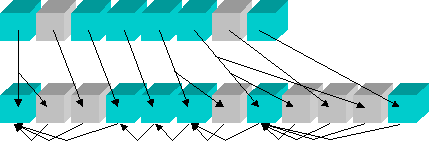

2004-02-11
There is a problem in the language of the specification of UAX #15: Unicode Normalization Forms for forms NFC and NFKC. A textual fix is required to make normalization formally self-consistent. Programs that depend on such logical consistency may be subject to security problems until fixed, although as yet we know of no realistic scenarios that would present such problems. The fix will not have an impact on real data found in practice (with the possible exception of test cases for the algorithm itself), because the affected sequences do not constitute well-formed text in any language.
Note: we may add to this document over time, particularly regarding implementations surveyed.
Fortunately, the actual cases of problematic data are limited to sequences that should never occur in practice. An important feature of these combinations are that they do not occur in well-formed text in any language. For example, one never sees the sequence A:
U+1100 (ᄀ) HANGUL CHOSEONG KIYEOK +
U+0300 (◌̀) COMBINING GRAVE ACCENT +
U+1161 (ᅡ) HANGUL JUNGSEONG A
Note: some browsers may not correctly display the character in parentheses, such as (ᄀ). These are only for illustration: the character codes and names are sufficient for identification.
The full specification of all problem sequences are listed in the table Problem Sequences, at the end of this document.
The definitions of NFC and NFKC as they stand contain a contradiction, and will cause the following problems for implementations and interoperability:
That is, there is some x such that toNFC(toNFC(x)) ≠ toNFC(x)
This is a crucial feature for consistent lookup. Requesting A and getting B, and then requesting B and getting C is clearly something to be avoided. It is also required for
fundamental logical consistency, e.g. so that isNFC(toNFC(x)) always returns TRUE.
That is, there are some x and y where toNFD(x) ≠ toNFD(y), but toNFC(x) = toNFC(y)
It is difficult to construct realistic cases where these situations present a security hole, although it is certainly possible to come up with contrived examples. One possibility might be a string that is normalized by a gatekeeper function, and passed on with the expectation that any further normalization will maintain precisely the same string. However, the character sequences will not occur in real data, and the characters involved are extremely unlikely to be used in programming syntax, so it is difficult to come up with examples where this would allow infiltration or cause other malfunction.
However, we welcome feedback from experts in this area.
The process of forming a composition in Normalization Form NFC (or NFKC) involves:
Figure 1 shows a sample of how this works. The dark green cubes represent starters (characters with a Canonical Combining Class (CCC) value of zero), and the light gray cubes represent non-starters (characters with a CCC value strictly greater than zero). In the first step, the string is fully decomposed, and reordered. In the second step, each character is checked against the last non-starter, and combined if all the conditions are met. Examples are provided in Annex 1: Examples and Charts. For more detail, see UAX #15: Unicode Normalization Forms.

Figure 1. Composition Process
Note that in the second row above (which is after Step 1), the CCC values of the gray boxes will be non-decreasing. Thus the values could be:
| 0 | 8 | 230 | 0 | 0 | 0 | 5 | 0 | 220 | 220 | 230 | 0 |
The sequence of CCC values can never decrease, except to go to zero. Thus the following sequence could never occur after Step 1 has been performed. The values which disobey the constraint on non-decreasing values are shown in red:
| 0 | 8 | 230 | 0 | 0 | 0 | 5 | 0 | 220 | 232 | 230 | 0 |
The problem text occurs in Definition D2, which defines what it means for a character to be blocked, according to the following text:
D2. In any character sequence beginning with a starter S, a character C is blocked from S if and only if there is some character B between S and C, and either B is a starter or it has the same combining class as C.
The implementations that were used to develop normalization, the original design, and the sample code in UAX #15 and charlint actually adhere to the following, corrected, language (the missing wording was a glitch that escaped examination):
D2'. In any character sequence beginning with a starter S, a character C is blocked from S if and only if there is some character B between S and C, and either B is a starter or it has the same or higher combining class as C.
The following table shows the difference between D2 and D2', where k and i are nonzero canonical combining classes (ccc).
| ccc(S) | ccc(B) | ccc(C) | B blocks C? | Comments |
|---|---|---|---|---|
| 0 | 0 | 0 | irrelevant | impossible: in the algorithm B becomes S as soon as it is seen |
| 0 | 0 | k | irrelevant | impossible: in the algorithm B becomes S as soon as it is seen |
| 0 | i | 0 | yes | was no in D2 |
| 0 | i | k = i | yes | avoids affecting ordering in both cases |
| 0 | i | k > i | no | allows combination in both cases |
| 0 | i | i > k | irrelevant | impossible after canonical reordering |
Here is an example that shows where this makes a difference. In the sequence A below, U+0300 has CCC = 230, while the two Hangul characters have CCC = 0 (and thus are starters):
U+1100 (ᄀ) HANGUL CHOSEONG KIYEOK +
U+0300 (◌̀) COMBINING GRAVE ACCENT +
U+1161 (ᅡ) HANGUL JUNGSEONG A
According to the old language, the NFC form of this would be B:
U+AC00 (가) HANGUL SYLLABLE GA +
U+0300 (◌̀) COMBINING GRAVE ACCENT
That is, last character is not blocked by the accent, and combines with the first character. The corrected language in D2' prevents this, and the NFC form stays the same, as in C :
U+1100 (ᄀ) HANGUL CHOSEONG KIYEOK +
U+0300 (◌̀) COMBINING GRAVE ACCENT +
U+1161 (ᅡ) HANGUL JUNGSEONG A
For examples of where this causes the normalization transform to be unstable, see Instability Example.
The contradictions in the definition of normalization format must be corrected by correcting D2 to D2'. In detail, the recommended actions for the Unicode Consortium are the following:
For all implementations that we have been able to review, either the code follows the example of the sample code, and needs no changes, OR the code change is quite small, typically converting a not-equals (!=) to a less-than (<) on one line of code. As discussed above, in practice no data should be affected.
To see whether an implementation has the problem, check the following cases to make sure that they do not change after applying NFC.
If a format or specification (such as for identifiers) uses NFC or NFKC and wants to remain stable across the change, one possible approach is to forbid sequences defined by the table Problem Sequences below. These sequences should never appear in real data, so the restriction does not cause any lack of expressiveness. Some supersets of these sequences are easier to compute, and also will not occur in practice, so could be forbidden instead. For example, one could forbid any last_character that is after an intervening_character. This is easy to detect, and any occurrence of last_character itself will be quite rare, so this should not materially affect performance.
Note: The characters matching last_character are also defined in the section ComposingChars in the W3C Character Model for the World Wide Web 1.0. (The public Working Draft 22 August 2003 version of the table mistakenly includes 0FB5 and 0FB7. Those are to be fixed in the next version.)
The following table shows all of the problem sequences. Those are of the form
first_character intervening_character+ last_character
where the first_character and last_character come from the same row in the following table, and there is at least one intervening_character with non-zero Canonical Combining Class. (The '+' above means one or more occurrences.) As noted above, these sequences will not occur in practice.
| First Character | Last Character |
|---|---|
| 09C7 BENGALI VOWEL SIGN E | 09BE BENGALI VOWEL SIGN AA or 09D7 BENGALI AU LENGTH MARK |
| 0B47 ORIYA VOWEL SIGN E | 0B3E ORIYA VOWEL SIGN AA or 0B56 ORIYA AI LENGTH MARK or 0B57 ORIYA AU LENGTH MARK |
| 0BC6 TAMIL VOWEL SIGN E | 0BBE TAMIL VOWEL SIGN AA or 0BD7 TAMIL AU LENGTH MARK |
| 0BC7 TAMIL VOWEL SIGN EE | 0BBE TAMIL VOWEL SIGN AA |
| 0B92 TAMIL LETTER O | 0BD7 TAMIL AU LENGTH MARK |
| 0CC6 KANNADA VOWEL SIGN E | 0CC2 KANNADA VOWEL SIGN UU or 0CD5 KANNADA LENGTH MARK or 0CD6 KANNADA AI LENGTH MARK |
| 0CBF KANNADA VOWEL SIGN I or 0CCA KANNADA VOWEL SIGN O |
0CD5 KANNADA LENGTH MARK |
| 0D47 MALAYALAM VOWEL SIGN EE | 0D3E MALAYALAM VOWEL SIGN AA |
| 0D46 MALAYALAM VOWEL SIGN E | 0D3E MALAYALAM VOWEL SIGN AA or 0D57 MALAYALAM AU LENGTH MARK |
| 1025 MYANMAR LETTER U | 102E MYANMAR VOWEL SIGN II |
| 0DD9 SINHALA VOWEL SIGN KOMBUVA | 0DCF SINHALA VOWEL SIGN AELA-PILLA or 0DDF SINHALA VOWEL SIGN GAYANUKITTA |
| 1100..1112 HANGUL CHOSEONG KIYEOK..HIEUH [19 instances] | 1161..1175 HANGUL JUNGSEONG A..I [21 instances] |
| [:HangulSyllableType=LV:] | 11A8..11C2 HANGUL JONGSEONG KIYEOK..HIEUH [27 instances] |
An example where the existing definition D2 causes failure of stability for repeated normalization is shown in sequence D:
U+1100 (ᄀ) HANGUL CHOSEONG KIYEOK +
U+0300 (◌̀) COMBINING GRAVE ACCENT +
U+1161 (ᅡ) HANGUL JUNGSEONG A +
U+0323 (◌̣) COMBINING DOT BELOW
The first NFC normalization produces sequence E:
U+AC00 (가) HANGUL SYLLABLE GA +
U+0300 (◌̀) COMBINING GRAVE ACCENT +
U+0323 (◌̣) COMBINING DOT BELOW
A subsequent NFC normalization reverses the order of the accents, producing sequence F:
U+AC00 (가) HANGUL SYLLABLE GA +
U+0323 (◌̣) COMBINING DOT BELOW +
U+0300 (◌̀) COMBINING GRAVE ACCENT
These examples are deliberately contrived, in order to illustrate the problem. Such sequences do not occur in well-formed textual data in any language.